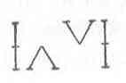

Kant: AA XVI, L §. 369--373. IX 125--128. §. 65--74. ... , Seite 727 |
|||||||
Zeile:
|
Text:
|
|
|
||||
| 01 | * (s in der vierten Figur kommt (g durch reduction ) das umgekehrte | ||||||
| 02 | der vorigen conclusion (g P S ) heraus; diese muß also selber umgekehrt | ||||||
| 03 | werden. Also erstlich: metathesis praemissarum, denn: inversio | ||||||
| 04 | conclusionis. ) | ||||||
| 05 | Es sind vier Arten, diese drey Glieder an einander zu halten, so daß | ||||||
| 06 | M das Mittel ausmacht mit P und S verknüpft ist. | ||||||
| 07 | 1. Figura 1. als einem zwischen Glied; oder 2. indem P und S daran | ||||||
| 08 | hangen und indem ich so umwende, daß M an P hängt; 3. indem M an P | ||||||
| 09 | und S hängt: so mache ich, daß S an M hängti; oder ich kehre jedes um, | ||||||
| 10 | so daß M an P und und S an M hängt. | ||||||
| 11 | Denn alles an einander hangen Der Schlus ist, das S an P hange | ||||||
| 12 | (als an Haaken); also muß entweder P, welches anhing zum Aufhangenspunkt | ||||||
| 13 | werden, oder S, welches aufhängungspunkt war, abhangen, oder | ||||||
| 14 | beydes Geschehen. | ||||||
| 15 | (g in der Vierten Figur ist das praedicat eigentlich Mtttelbar unter | ||||||
| 16 | der notion des subiects; denn es ist unter dem medio termino, dieser | ||||||
| 17 | unter dem subiect; also würde eigentlich das Umgekehrte der conclusion | ||||||
| 18 | herauskommen, wo nicht beyde Vordersaetze umgekehrt werden. ) | ||||||
3236. ι2--υ. L 102'. Zu L §. 369--373: |
|||||||
| 19 |  |
||||||
| 20 | Das subiect ist iederzeit in Ansehung des praedicats particular oder | ||||||
| 21 | inferior. Also muß das praedicat allgemein in der maiori genommen | ||||||
| 22 | werden. | ||||||
| [ Seite 726 ] [ Seite 728 ] [ Inhaltsverzeichnis ] |
|||||||
;){kind=link}